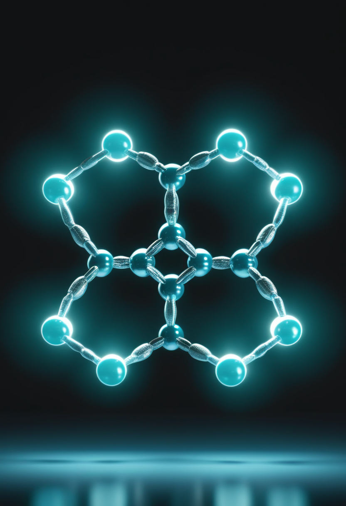
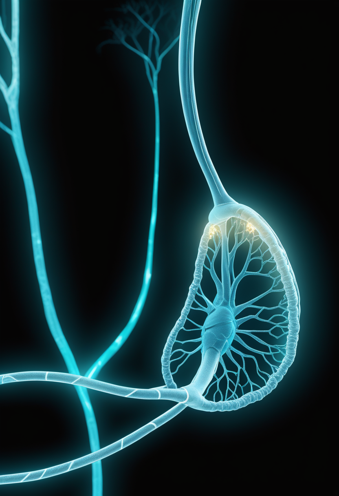
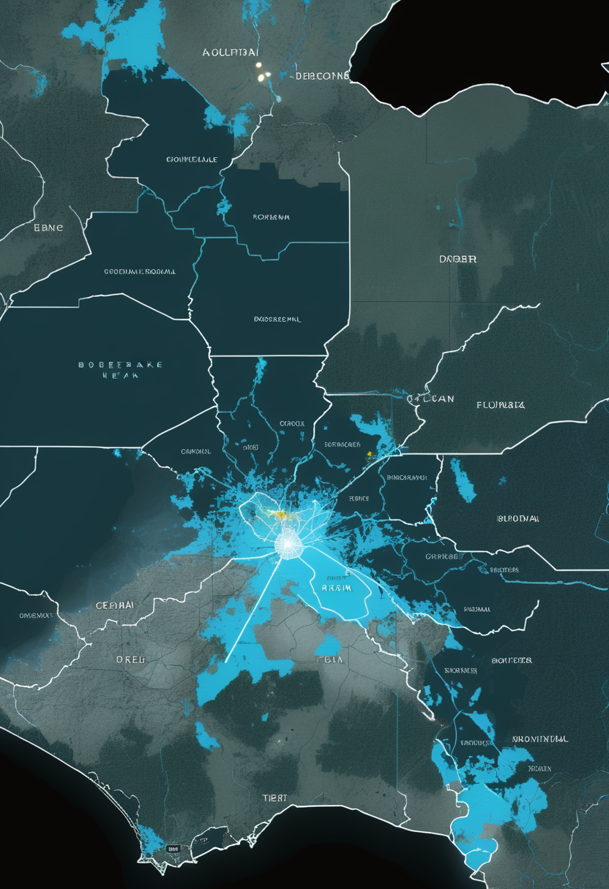
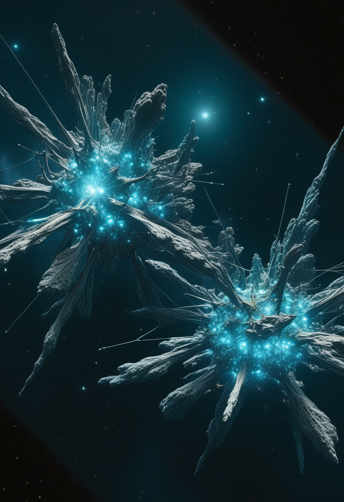
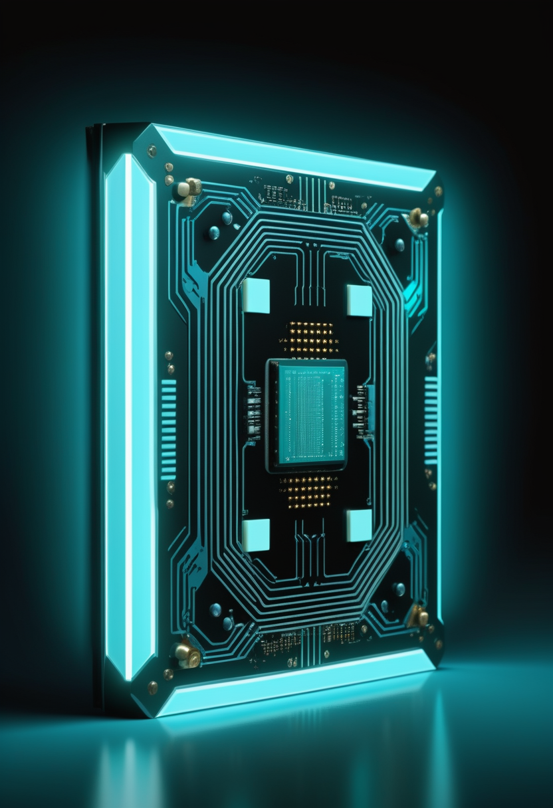

6月13日、DRCのエボラ確定例は782例・181死者に達し、前報告から106例・45死者が一気に加わった。週100例を超すペースで拡大するPHEIC下で、承認ワクチンも特異的治療薬も存在しない。その同じ火曜日に、中国が世界初のデュアルコア200量子ビット機を公開し、NeuralinkはSeries Eで6.5億ドルを携えて量産時代を宣言し、Spinrazaの高用量がEU・スイス・日本で承認された。緊急と前進は、同じ日付を共有する。
6月14日、DRC保健省は6月13日時点の累計確定例782例・死者181名・入院中359名を発表した。6月12日前回報告からの短期間で確定106例・死者45名が加わっており、過去のブンディブギョ型アウトブレイクで最速のペースが続いている。WHOのPHEIC（国際的公衆衛生上の緊急事態）は5月17日の宣言から継続中で、ブンディブギョ株向けの承認ワクチン・特異的治療薬は存在しない。被害の中心はイトゥリ州（20保健ゾーンで717例）、北キブ州62例・南キブ州3例も確認されており、武装勢力の活動と人口移動が感染制御の最大障壁となっている。
Scholar Rockのアピテグロマブ（ミオスタチン阻害薬、SMAタイプ2・3）のBLAをFDAが2026年3月31日に受理し、PDUFA dateを9月30日に設定。EMAのMAA審査も並行して継続中で、EU承認はH2 2026が見込まれる。SAPPHIRE第3相試験でHFMSE +1.8点の統計的有意な改善を達成しており、承認されれば「SMN標的＋ミオスタチン阻害」の世界初の2層レジメンが実現する。製造施設（Catalent/Novo Nordisk）の問題は解決済みで、薬剤本体の有効性・安全性への懸念はない。

BiogenのSpinraza高用量レジメン（50mg×2回・14日間隔の急速ローディング＋28mg維持用量・4か月毎）は米国FDAに続き、欧州連合・スイス・日本でも承認された。Biogenは日本市場でのローンチに好調なサインを確認している。投与間隔は従来の標準用量と変わらないため患者負担への影響は限定的で、急速ローディングにより初期の薬物曝露が増加し、より迅速な治療効果の発現が期待される。
Scholar Rockが進めるPhase 2 OPAL試験では、承認済みSMN1遺伝子治療または継続的SMN2標的療法を受けている2歳未満のSMA患児を対象に、アピテグロマブの有効性・安全性を評価する。遺伝子治療後に残る運動機能改善余地を筋肉標的アプローチで補完するという戦略で、「SMN補充」から「筋肉保護」へと治療パラダイムを拡張する試みとして患者コミュニティの注目を集めている。
アピテグロマブのPDUFAまで残り約107日。Spinraza高用量がEU・スイス・日本で承認され、OPAL試験が「遺伝子治療後の次の一手」を探す ── 2026年のSMAケアは二正面から前進している。
2026年6月、NeuralinkはSeries Eで追加6.5億ドルを調達し、患者アクセス拡大と次世代機器開発を加速する。2026年中に高量産体制へ移行し、ほぼ完全自動化された外科手術を導入予定。改良型術式では硬膜を除去せずにスレッドを通過させる方式で侵襲性を低減。21名のNeuralnauts（患者参加者）が継続使用中で、ALS患者が毎分40ワードの文字入力を達成。FDAはスピーチ復元を対象にBreakthrough Device指定を付与した。

2025年11月にDouble Point Ventures主導で2億ドルのSeries Dを調達したSynchronは、2026年に米国複数施設でStentrode BCIのピボタル試験を開始し、植込み型BCI初のFDA PMA取得を目指す。Stentrodeは血管内留置型（非開頭）16電極デバイスで、COMMAND試験の12か月安全エンドポイントを達成済み。ALS患者がiPhone・iPad・Apple Vision Proをネイティブに思考操作できることが確認されている。
ACM主催の視線追跡研究・応用シンポジウム（ETRA 2026）が6月1〜4日にモロッコ・マラケシュで開催された。2026年刊行のJMIR Rehabilitation誌では後天性脳損傷後の認知アセスメントに視線追跡が有効との系統的レビューが掲載されており、ASD診断・AAC支援に続く第三の臨床応用領域として認知評価への射程が広がっている。
NeuralinkとSynchronが同時に承認レースに入り、視線追跡が後天性脳損傷の認知評価まで射程を広げた。BCI三層（侵襲・低侵襲・非侵襲）が2026年後半に向けて同時進行している。
6月14日、DRC保健省は6月13日時点の累計確定例782例・死者181名・入院中359名を発表した。6月12日前回報告からの短期間で確定106例・死者45名が加わっており、過去のブンディブギョ型アウトブレイクで最速のペースが続いている。被害の中心はイトゥリ州（20保健ゾーンで717例）で、北キブ州62例・南キブ州3例も確認。武装勢力の活動と人口移動が感染制御の最大障壁となっており、接触追跡率は目標90%に対し依然50%以下と推定される。

6月15日時点、ウガンダの累計確定例は19例（輸入14例・現地発生5例）、死者2名・回復7名・入院中10名で、6月5日以降の新規感染はゼロを維持している。WHOはPHEIC継続中で、Africa CDCとともに5.2億ドルの大陸統合対応計画を発動中。DRCからの波及リスクは依然として続いており、監視体制が継続されている。
2025年12月18日〜2026年6月9日の期間、マダガスカルで累計2,000件のmpox確定例と死者7名が報告された（Clade Ib型確認済み）。エボラ急拡大（782例）との資源競合が公衆衛生上の懸念となっている。WHO「One Response」の6〜11月計画においてエボラ・mpox・コレラの三重危機への統合対応が優先課題に指定されているが、DRCエボラへの国際的注目集中が他疾患対応の陰を薄める構造的リスクが残る。
782例・181死者 ── 「週100例超」のペースが示すのは、接触追跡も医療資源も感染速度に追いついていないという現実だ。ウガンダは新規ゼロを保っているが、DRC本国の収束は見通せない。
中国科学院（CAS）系のCAS Cold Atom Technology社（武漢）が2026年5月、ルビジウム原子を用いた200量子ビット・デュアルコア量子コンピュータ「Hanyuan-2」を公開した。Rb-87が100量子ビット・Rb-85が100量子ビットの2コアが協調して誤り訂正と並列演算を実現する中性原子方式で、超伝導型と異なり極低温環境が不要。中国政府は第14次五カ年計画（2026〜2030年）で量子技術を国家戦略最優先分野に位置付けており、Hanyuan-2はその具体的成果と位置づけられる。

2026年5月12日、ジェームズ・ウェッブ宇宙望遠鏡（JWST）が宇宙の大規模構造「コズミックウェブ」の過去最高解像度マップを生成した。密集した銀河クラスターとフィラメントが明るく浮かび上がり、その間に広がるほぼ空のボイド（虚空）との対比が鮮明に可視化された。このデータは宇宙の構造形成モデルを検証するための重要なベンチマークとなる。ESA Euclid Q2（6/24公開予定）との相補的なデータ拡充も期待される。

2026年6月1日、ScienceDaily はAIと量子コンピューティングの加速に向けた光駆動チップの開発報告を掲載した。光子を用いた演算は電子ベースの半導体と比較してエネルギー消費を大幅に削減でき、高速並列処理に適している。6/14号で報告したMonash大のフォトニック量子チップ（バレー自由度を活用した光生成・誘導・読取の1チップ完結）と同日発表で、「光処理集積化」という共通方向性が2026年6月に集中している。
中国のHanyuan-2が「デュアルコア×中性原子」で量子競争に新軸を加え、JWSTがコズミックウェブの最高解像度を刻み、光駆動チップが量子・AIのハードウェア基盤を塗り替えようとしている。
Nature Computational Science誌の分析によれば、デジタルツインは受動的なシミュレーションツールから自律的に学習・推論・シナリオ生成が可能な「エージェント型システム」へ急速に進化している。生成AIとの統合により、認知・行動・メンタルヘルスリスクまでモデル化する領域に踏み込みつつあり、誰がそのデータにアクセスできるかという倫理的規制の整備が喫緊の課題となっている。
PMC（NCBI）掲載の2026年研究（PMC12561581）では、遺伝子・神経画像・行動データを統合した認知デジタルツインがAlzheimer病・Parkinson病・統合失調症等への精密介入を可能にする段階に達しつつあることが示された。実世界の性能は試験環境より10〜15%低下する可能性があり、大規模多施設検証が必須。データプライバシーとアルゴリズムバイアスの倫理課題も浮上している。
2025年10月発表の State of Brain Emulation Report は、現時点でシリコン上に完璧に再現された人間ニューロンは存在せず、意識アップロードの実証事例もゼロとの評価を下した。全脳エミュレーションは最短でも30〜40年先が専門家の合意。一方、MedicalXpress（2026/5）は「仮想脳コピー研究が想定より速く進んでいる」との楽観論も報じており、「段階的医療ツール（5〜10年）」と「全脳エミュレーション（30〜40年）」の評価が分岐している。
「受動的シミュレーション」が「自律エージェント」へと進化し、認知ツインが実際の臨床段階に踏み込む今、評価は分かれながらも「人間のデジタル化」は止まらない。
今日の世界は、DRCの782という数字を改めて刻んだ。6月12日から13日のたった一日で106例が加わり、45人が命を落とした。ブンディブギョ型の承認ワクチンは存在しない。その重力を胸に置きながら、今日は中国が200量子ビットのデュアルコア機を世界に示し、Neuralinkが6.5億ドルの調達で量産時代の扉を叩き、Spinrazaの高用量がEU・スイス・日本の3市場で新たな標準に加わった。JWSTがコズミックウェブの最高解像度マップを描き、光の1枚チップが量子演算を前へ押し進める。脳のデジタル双子は自律エージェントへと静かに進化し、認知ツインが臨床の入口に立っている。
明日への短い便り。今日も世界は、問いながら回っていました。おやすみなさい。